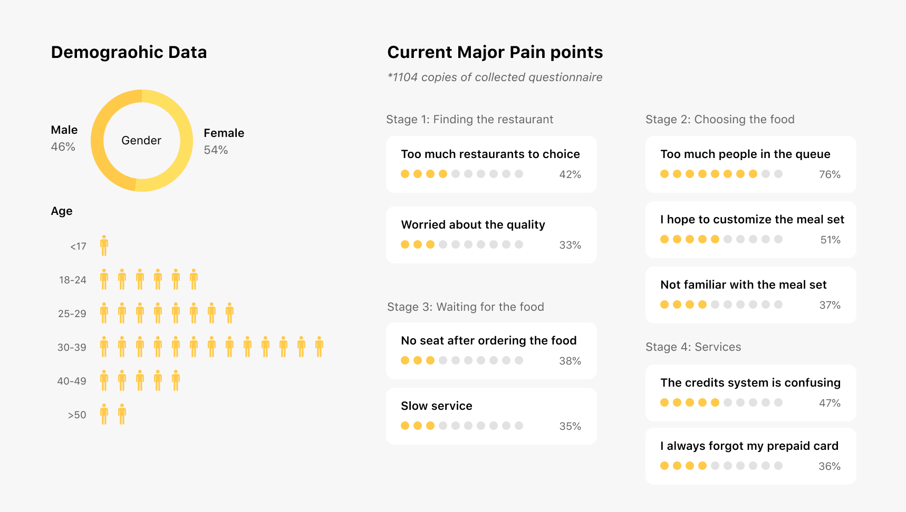
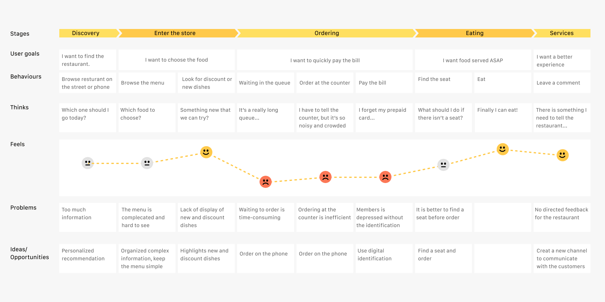

Home Screen
The order status would pop after submit, allowing users to check it anytime. Recommended food would show one’s favourite to help accelerate decision-making.
Kungfu Restaurant is a Chinese fast-food restaurant founded over 25 years. It provides premium quality meals and services through the standardization of Chinese food production, which makes it the only local company in the top five in the fast-food market.
As the company continued to grow, Kungfu needed to keep up with the trend of digitalization in China and provide a better dining experience to gain more customers and a better reputation.
We started with gathering necessary information from the existent customers. With the help of the marketing team of Kungfu Restaurant Co., we collected more than 1,000 questionnaires and highlighted some of the major pain points for further analysis.
 1. The customers were diverse in age. Most users age between 30-39, which are older than other digital products. So our product needs to be simple and straightforward.
2. Most pain points lied within ordering engagement, which covers waiting in a queue, reading the menu and getting the food.
3. Our client hoped to get better digital retail strategies. Creating a digital profile for each customer and recommended menu would deliver higher business value.
Our solution is Kungfu Order (WeChat Mini Program): A phone-ordering service for users to make order fast without waiting in the queue or any downloads.
We applied the method of lean product and agile development focusing on building minimun variable products. As the lead designer, I needed to deliver the design with rapid prototyping and evaluate them with usability testing.
We quickly launched the first version to see whether the users would prefer phone-ordering than the conventional way.
20-50% users prefer online-order. Users (especially those around the CBD and shopping malls) thought ordering foods on the phone is way more pleasing than waiting in the queue. Our team considered this a solid proof of problem-solution fit.
Less POS needed. Kungfu Order helped ease the heavy burden of operation in restaurants. The staffs combined the service into the retail process and achieved higher productivity.
While the company popularized the services to more restaurants around the country, some new problems also exposed:
1. Low conversion rate.
The completion rate from the menu to finish remained only
50%,
which
means
that users were having
trouble in choosing the food they need.
2. Lack of user growth and retention.
While we had complete the main feature, we
needed
to
improve
the products' capability in growth hacking to increase the quantity and loyalty of our customers.
3. Inconsistent design language
The interface design looks a bit rough under agile
development. A
consistent design system would help improve the design qupty in design sprints.
At this stage, we have access to overwhelming user data. We combined user observation, interview and behaviour analysis to target the specific problem occurred in the user flow.
I used the frame of the Atomic Design System and rebuilt all the UI elements to formulate consistent interface and experience. Collaborating with engineers, we implemented every design tokens, components and templates to maintain a cohesive design during fast scaling.
The order status would pop after submit, allowing users to check it anytime. Recommended food would show one’s favourite to help accelerate decision-making.
We enhanced the menu with organized catalogue and intuitive customizing meal sets based on the mental model we discovered from card sorting. It is an example of how motion provides meanings.
I tried to promote recharge in the purchase process and provided an appropriate option related to the current bill — this change contributed over 30% conversion rate and gained more user retention.
Inspired by the bordering pass, I redesigned the order screen. The customers could be aware of the process at any time. Large number increased legibility when showing their phone to get the meal in a noisy environment.
After the improvements, the overall user retention grew to over 55% while the service was expending. The average time of order takes only 90 seconds, which brings us 89% of customer satisfaction. We delivered both integrated services and the concept of digital operation to our client.
Data-Inspired design: I learned how to measure user experience, and the combination of both data analysis and interview give me a whole picture of macro and micro user experience.
Design system practice: I tried to introduce a design system in the project, and it did not just improve the quality of the product, but also saved a bunch of time for both designers and developers.
How design contributes business values: At the very beginning, the company focused more on profits. Design was just an inessential part. I tried a lot to communicate the role of design in building a great product and brand. To do that, I have to answer to myself first.
This is the first project that I’ve played the role of the lead product designer. I couldn’t do that without the support of my lovely team!